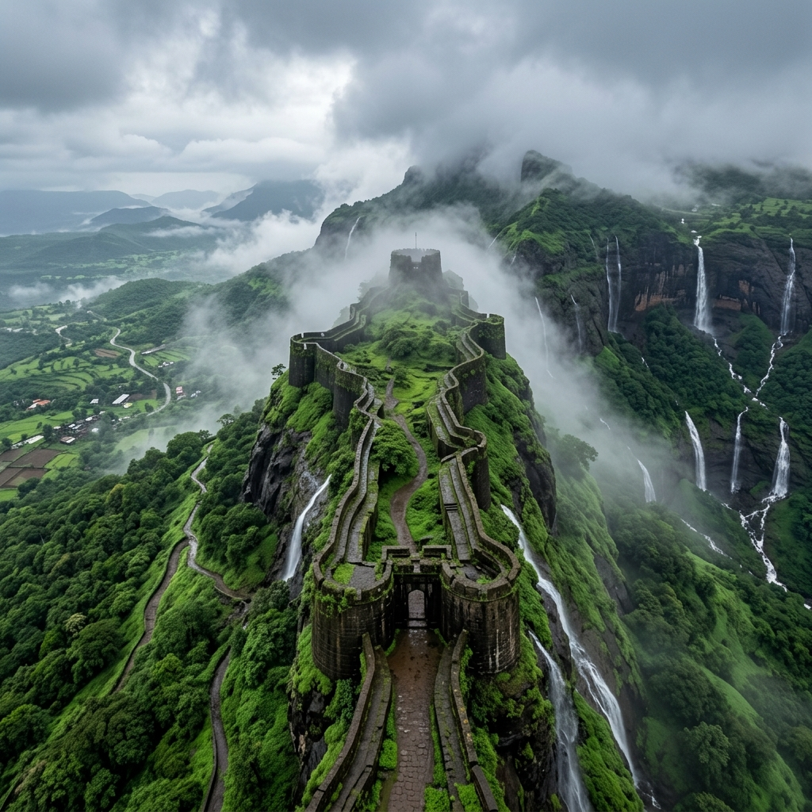

About Temple
Visiting Jejuri Khandoba Temple is not just about darshan, it feels like being part of a powerful and energetic tradition. As you climb the long series of steps leading up to the temple, you’ll see everything covered in yellow turmeric (bhandara), which gives the place a completely different and vibrant look. The atmosphere is full of devotion, chants, and energy, making it a unique experience compared to calm temples. It’s a place where faith is expressed loudly and proudly.
Yellow Turmeric
Vibrant Bhandara
Loud Devotion
Energetic Devotion

History & Significance

The temple is dedicated to Lord Khandoba, a form of Lord Shiva, who is believed to be the protector and warrior deity of the region. He is especially worshipped by farming and warrior communities in Maharashtra. The temple has a long history and has been an important spiritual center for centuries. The rituals and traditions followed here are deeply connected to local culture and beliefs.
Lord Khandoba
Protector & Warrior
Local Culture
Deeply Connected
What Makes It Unique
Discover the unique factors that set Jejuri Khandoba Temple apart from other shrines.


Travel Guide
Convenient ways to reach the temple in Jejuri.
Option 1: Road from Pune
Jejuri is located about 50 km from Pune and can be reached easily by road within 1–1.5 hours. From Mumbai, it is around 200 km (~4–5 hours by car) via NH 48.
Pune: 1 - 1.5 hours by roadOption 2: Railways & Local Autos
Trains connect Pune to Jejuri Railway Station. From the station, shared autos and cabs regularly run to the base of the hill temple.
Rail Station: Jejuri JunctionOption 3: Step Climb
The final part of the journey requires climbing the flight of stone steps up to the hilltop shrine. Cabs drop off at the lower plaza.
Essential Information
Important details regarding timings, queues, and ideal visiting slots.
Timings & Crowd
Opens at 5:00 AM and closes at 8:00 PM. Mornings are ideal for a quiet, comfortable climb before the midday sun makes the steps hot.
Entry & Offerings
General entry for darshan is free. Bhandara (turmeric powder) can be bought from local shops along the climb to offer at the altar.
Best Time to Visit
October to March offers cool weather. The Wari and Champa Shashti festival periods are extremely lively and full of turmeric celebrations.
Location & Coordinates
Jejuri town, Pune district, Maharashtra, India